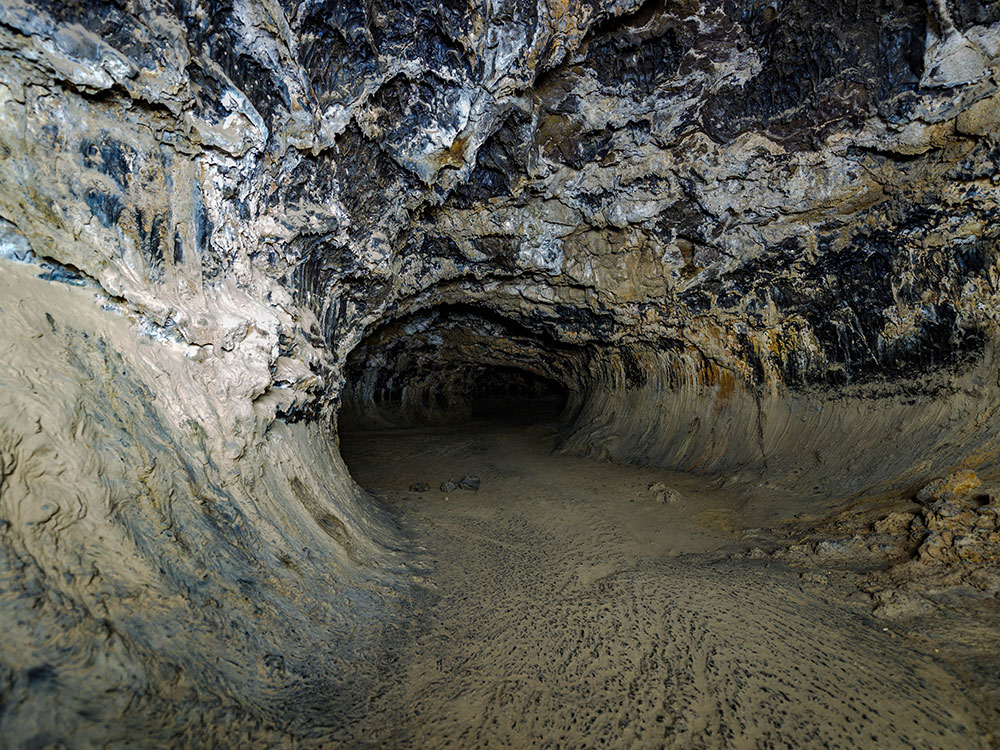
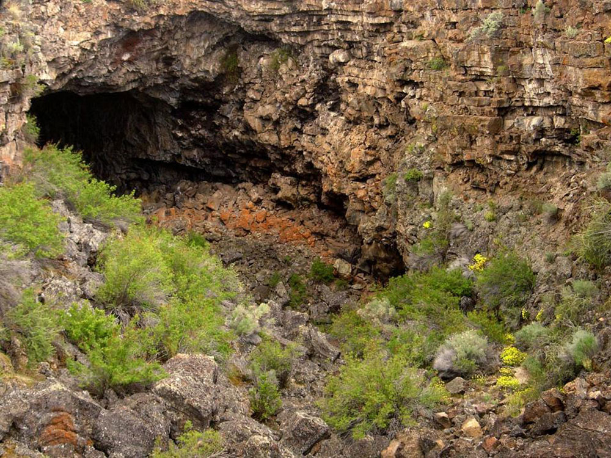
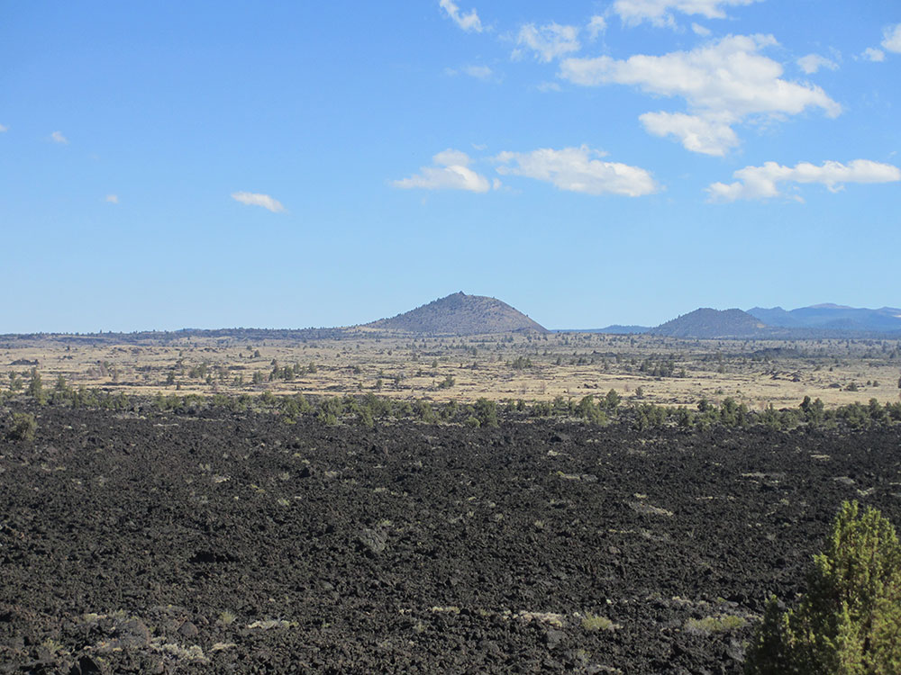
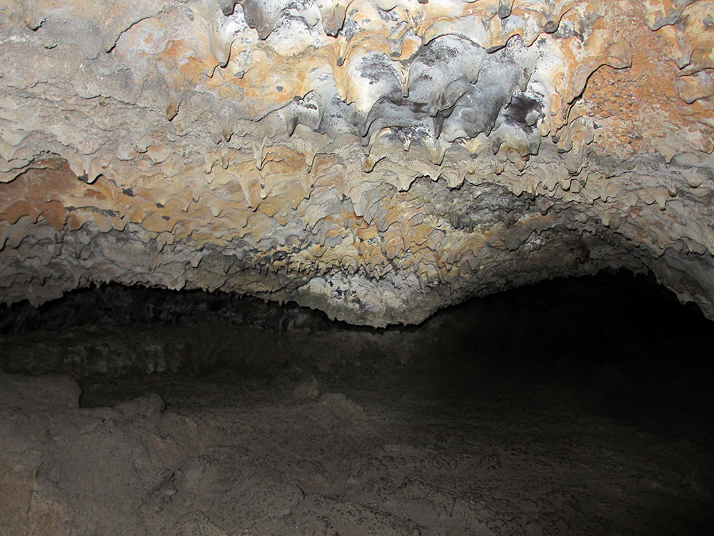
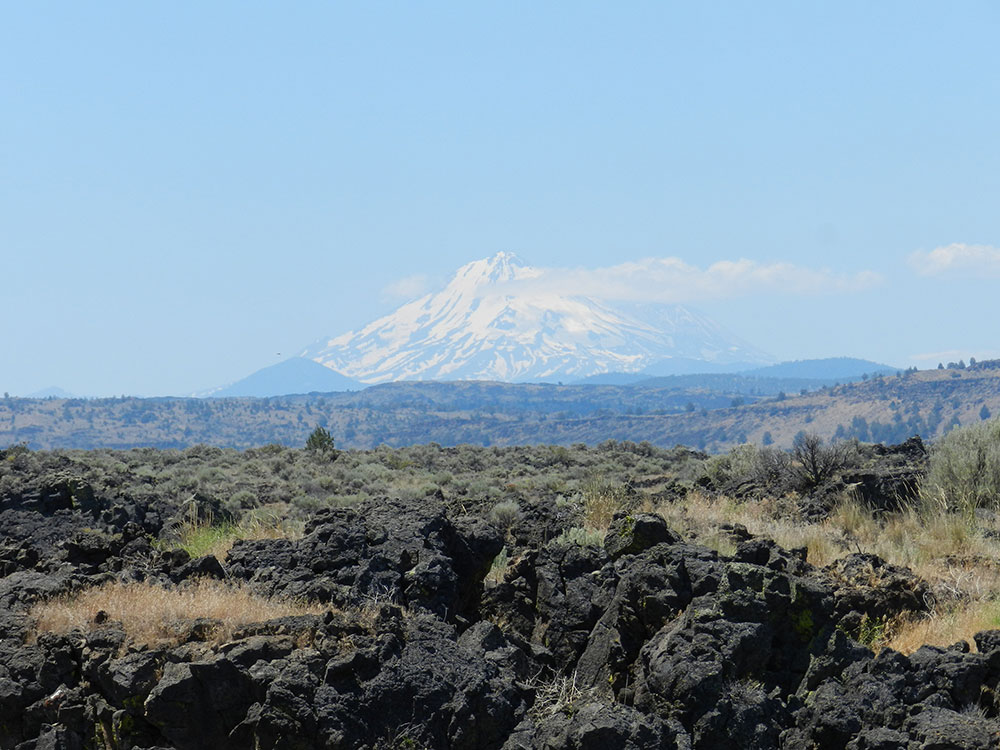
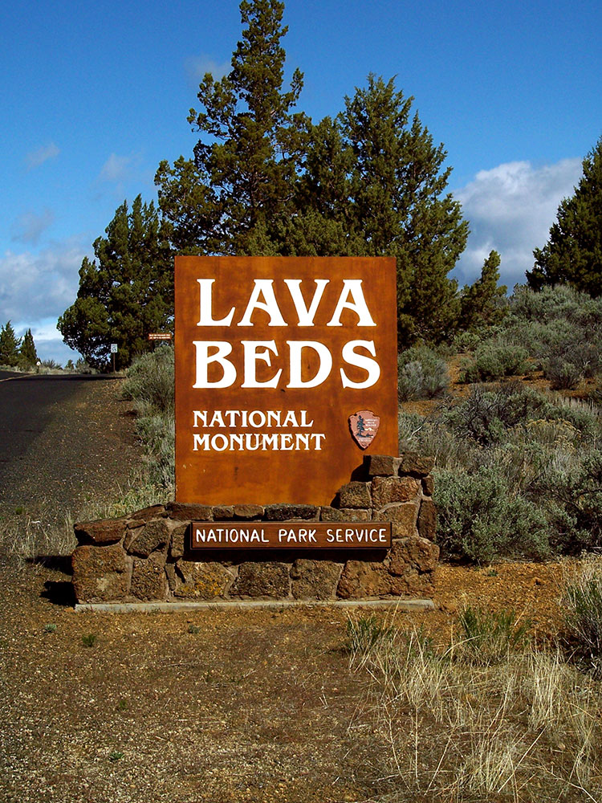

.jpg){kind=link}
Largest total area covered by a volcano in the Cascade Range and features numerous lava tubes, with 27 having marked entrances and developed trails for public access and exploration
General Information
Visitor Center: Daily, 9:30 AM to 4:00 PM
Closed on Christmas Day
Motorcycle: $20 (valid for 7 days)
Individual (on foot/bike, age 16+): $15
Annual Pass: $55
America the Beautiful Pass: Free–$80 depending on eligibility
Allowed in developed areas, roads, and campgrounds
Not allowed on trails, in caves, or buildings
Owners must clean up after pets and never leave them unattended
Spring and Fall offer mild weather and fewer crowds
Winter may bring snow and road closures
How to Get There
From Redding, CA (151 mi): Take CA-299 E to Alturas, then follow signs south via CA-139 and County Road 111 to reach Lava Beds National Monument.
Overview
Lava Beds National Monument on the northeastern flank of Medicine Lake Volcano in Siskiyou and Modoc counties is a 46,000-acre landscape with more than 700 caves, of which 27 lava tubes have marked entrances and developed trails for exploration, such as Mushpot, Sentinel and Skull caves. It is a unit of the National Park Service, proclaimed a national monument by President Calvin Coolidge in 1925 to protect the caves and the volcanic landscape around them. The monument also preserves sites of the 1872–73 Modoc War, including Captain Jack’s Stronghold, and Native American rock art at Petroglyph Point. Visitors come to walk through lava tubes, climb cinder cones and learn about the Modoc people’s resistance against the U.S. Army.
Access
Lava Beds is in a remote corner of northeastern California near the Oregon border, reached by paved roads, with most visitors arriving from the Tulelake area or from Highway 139 and the Oregon border. The monument’s mailing address is Tulelake, and the nearest services are about 20 to 30 minutes away in Tulelake, Tionesta and Merrill, Oregon. There is no gas, restaurant or shower service inside the monument, and cell service is limited, so fill the tank and bring food and water. Most major sites, including the visitor center, Cave Loop and Captain Jack’s Stronghold, are on paved roads, while a few spur roads are gravel. Pets are not allowed on trails, in caves or in the visitor center.
Seasons
Summer is the busiest season, with warm, dry weather and the full range of ranger-led cave tours and programs. Spring and fall are milder and quieter, with comfortable temperatures for hiking and exploring caves. Winters are cold and snowy, and the main park road stays open year-round, but not all roads outside the park are open in winter and early spring, so check conditions before driving in. Some caves close temporarily or seasonally to protect hibernating bats and for safety, so check the NPS caving page for current closures. Caves stay cool year-round, so bring a jacket even on hot days.
Things to Do
Explore One of America's Largest Lava Tube Cave Systems
Lava Beds National Monument protects a remarkable volcanic landscape in northern California featuring hundreds of lava tube caves, rugged lava flows, cinder cones, and fascinating geological formations. The monument offers visitors a unique opportunity to explore both above-ground volcanic features and underground cave systems formed thousands of years ago.
Go Caving in Lava Tube Caves
The monument's most popular attraction is its extensive network of lava tube caves. More than 20 developed caves are open for exploration, ranging from easy walk-through caves suitable for beginners to challenging routes requiring scrambling and advanced caving skills. Visitors can experience massive underground chambers, lava formations, and unique cave ecosystems.
Learn About Modoc History and the Modoc War
Lava Beds preserves important cultural sites associated with the Modoc people and the Modoc War of 1872-1873. Visitors can explore Captain Jack's Stronghold and other historic locations where the Modoc people resisted U.S. military forces, gaining insight into a significant chapter of American history.
Visit Petroglyph Point
Petroglyph Point contains one of the largest concentrations of Native American rock art in California. The site features thousands of petroglyphs carved into rock surfaces, providing an important connection to the region's Indigenous cultures and history.
Climb Volcanic Features and Scenic Overlooks
The monument contains numerous volcanic landmarks, including Mammoth Crater, Schonchin Butte, and Fleener Chimneys. These geological features offer opportunities to learn about volcanic processes while enjoying panoramic views of the surrounding landscape.
Enjoy Wildlife Viewing and Stargazing
Lava Beds National Monument supports a variety of wildlife, including mule deer, coyotes, raptors, and numerous bird species. The remote location and dark skies also make the monument an excellent destination for astronomy programs, stargazing, and night photography.
Top Trails
Schonchin Butte Trail
Length: Approximately 1.4 miles round trip
Elevation Gain: Moderate
Difficulty: Moderate
This steep but rewarding trail climbs to the historic Schonchin Butte Fire Lookout. Visitors are rewarded with sweeping views of the monument, surrounding volcanic terrain, and distant mountains from one of the area's most prominent viewpoints.
Captain Jack's Stronghold Trail
Length: Approximately 1.5 miles loop
Elevation Gain: Minimal to Moderate
Difficulty: Easy to Moderate
This historic trail explores the natural fortress used by the Modoc people during the Modoc War. Interpretive signs explain the cultural and military history of the area while guiding visitors through rugged lava formations.
Mushpot Cave Trail
Length: Approximately 0.5 miles round trip
Elevation Gain: Minimal
Difficulty: Easy
Located near the visitor center, Mushpot Cave is the monument's only illuminated cave. Interpretive exhibits inside the cave explain lava tube formation and geology, making it an excellent introduction to caving at Lava Beds.
Hidden Valley and Mammoth Crater Trail
Length: Approximately 1 mile round trip
Elevation Gain: Minimal to Moderate
Difficulty: Easy
This short trail explores the volcanic features of Hidden Valley and Mammoth Crater, the source of many of the lava flows and cave systems found within the monument. Visitors can observe volcanic landscapes while learning about the area's geologic history.
Geologic formations
Lava Beds National Monument is geologically significant because of its wide variety of volcanic formations, including lava tubes, fumaroles, cinder cones, spatter cones, pit craters, hornitos, maars, lava flows, and volcanic fields.
Volcanic eruptions on the Medicine Lake shield volcano have created a rugged landscape punctuated by these many landforms of volcanism.
Cones
Cinder cones are formed when magma is under great pressure. It is released in a fountain of lava, blown into the air from a central vent. The lava cools as it falls, forming cinders that pile up around the vent. When the pressure has been relieved, the rest of the lava flows from the base of the cone. Cinder cones are typically monogenetic.
The cinder cones of Hippo Butte, Three Sisters, Juniper Butte, and Crescent Butte are all older than the Mammoth and Modoc Crater flows, more than 30,000-40,000 years old. Eagle Nest Butte and Bearpaw Butte are 114,000 years old. Schonchin Butte cinder cone and the andesitic flow from its base were formed around 62,000 years ago. The flow that formed Valentine Cave erupted 10,850 years ago. An eruption that formed The Castles is younger than the Mammoth Crater flows. Even younger were eruptions from Fleener Chimneys, such as the Devil's Homestead flow, 10,500 years ago, and Black Crater 3,025 years ago. About 1,110 years ago, plus or minus 60 years, the Callahan flow was produced by an eruption from Cinder Butte. Though Cinder Butte is just outside the boundary of the monument, the Callahan flow is in Lava Beds and is the youngest flow in the monument.
Spatter cones are built out of thicker lava. The lava is thrown out of the vent and builds, layer by layer, a chimney surrounding the vent. Fleener Chimneys and Black Crater are examples of spatter cones.
Lava flows
Roughly ninety percent of the lava in the Lava Beds Monument is basaltic. There are primarily two kinds of basaltic lava flows: pahoehoe and 'a'ā. Pahoehoe is smooth, often ropy and is the most common type of lava in Lava Beds. 'A'ā is formed when pahoehoe cools and loses some of its gases. 'A'ā is rough, sharp, and jagged; an excellent example is the Devil's Homestead lava flow, which originated at Fleener Chimneys. Most of the rest of the lava in the monument is andesitic. Pumice, a type of rhyolitic lava, also is found covering the monument; this rained down around 900 years ago during the eruption of Glass Mountain.
The flows from Mammoth and Modoc Craters comprise about two-thirds of the lava in the monument. Over 30 separate lava flows located in the park range in age from 2,000,000 years BP to 1,110 years BP. Some of the major lava flows within Lava Beds National Monument include the Callahan Flow; Schonchin Flow; Mammoth Crater Flow; Modoc Crater Flow; and Devil's Homestead Flow.
Lava fields
Gillem Bluff, a fault scarp, was created as the region stretched and a block of earth dropped down along this fault (see Basin and Range Province). The tuff layer on top of Gillem Bluff is 2,000,000 years old, indicating the rock layers beneath are even older. The oldest lava flow from the Medicine Lake Volcano within the monument is the Basalt of Hovey Point, near Captain Jack's Stronghold, which is 450,000 years old. Petroglyph Point was created about 275,000 years ago when cinders erupted through the shallow water of Tule Lake; violent explosions of ash and steam formed layers upon layers of tuff.
The caldera is thought to have formed by subsidence, during which basalt and andesite were erupted up on the slopes.
Lava tubes
Lava flows dated to about 30,000-40,000 years ago formed most of the lava tubes in the monument. As the hot basaltic lava flowed downhill, the top cooled and crusted over, insulating the rest of the lava and forming lava tubes. Lavacicles on the ceiling of a lava tube were produced as the level of lava in the tube retreated and the viscous lava on the ceiling dripped as it cooled.
Dripstone was created when lava splashed on the inside walls of the tubes. The leaching of minerals from pumice gravel, soils, and overlying rock provides for deposition of secondary speleothems in lava tubes.
Lava Beds National Monument has the largest concentration of lava tubes in North America. One has electrical lighting; the others are illuminated by ceiling collapse portals or require flashlights, available on loan.
Flora
The lava tube collapse systems and lava outcrops support a great diversity of plant life, from an impressive variety of lichens and mosses to plants such as desert sweet (Chamaebatiaria millefolium), the aromatic purple desert sage (Salvia dorrii carnosa) and yellow blazing star (Mentzelia laevicaulis). An impressive variety of fern species are present in cave entrances including the spreading wood fern (Dryopteris expansa) and the western swordfern (Polystichum munitum). These species are well outside of their normal range, which is 90-125 mi (145-201 km) west on the northern California coastline.
Fauna
Despite harsh, semi-arid conditions, native wildlife has adapted to the environmental constraints present in the region. There are no terrestrial water resources in Lava Beds National Monument. Some animals obtain water from caves, while others fly about twenty km (12 miles) north to Tule Lake. Federal and state animal species of special concern in the Monument include the Cooper's hawk (Accipiter cooperii), fringed myotis (Myotis thysanodes), long-eared myotis (Myotis evotis), long-legged myotis (Myotis volans), pallid bat (Antrozous pallidus), silver-haired bat (Lasionycteris noctivigans), Townsends big-eared bat (Corynorhinus townsendii), western small-footed myotis (Myotis ciliolabrum), and American badger (Taxidea taxus).
Because of a lack of surface water, amphibian presence in the monument is limited. The most common species found in the monument is the Pacific tree frog (Pseudacris regilla). This species is also found in the biologically rich cave entrances in the monument. Reptile species found in the monument include the northern sagebrush lizard (Sceloporus graciosus graciosus), Great Basin fence lizard (Sceloporus occidentalis biseriatus), western skink (Eumeces skiltonianus skiltonianus), Rocky Mountain rubber boa (Charina bottae utahensis), gopher snake (Pituophis melanoleucus), desert night snake (Hypsiglena torquata deserticola), and western rattlesnake (Crotalus viridis).
Key animal species by habitat:
- Bunch grass-sagebrush grasslands: mule deer, gopher snake, coyote, prairie falcon, western meadowlark, Anderson's larkspur, yellow-bellied marmot, kangaroo rat
- Ponderosa-juniper brushlands: pronghorn, bobcat, scrub jay, jackrabbit, mountain bluebird
- Pine forest: mountain lion, bald eagle (winter resident), golden-mantled ground squirrel
- Rocky lava flows: western fence lizard, western rattlesnake
- Cave mouths and interior passages: violet-green swallow, Brazilian free-tailed bat, Townsend's big-eared bat, Pacific tree frog, pika, bushy-tailed woodrat
- Lake shore areas: skunk, raccoon, great horned owl, short-eared owl
Lava Beds Wilderness
The Lava Beds National Wilderness is a 28,460-acre (11,520 ha) wilderness area within the Lava Beds National Monument. The wilderness protects more than half of the national monument in two separate eastern and western units. The larger eastern unit contains the extensive Schonchin lava flow on the east side of the monument. The western unit covers the monument's area within the transition zone of the Cascade Range's montane southern end and the arid Modoc Plateau ecosystems.
The different soil types creates plant community diversity in the wilderness area, providing various habitats for a wide range of wildlife. The numerous coyotes and foxes, as well as raptors, feed on rodents such as the jackrabbit and kangaroo rat. Many raptors are seen in the wilderness area, with 24 species of hawks identified. The monument is located on the Pacific Flyway, and the bald eagle winters in the northern portion of the wilderness area.
Lava Beds trails
The Lava Beds National Monument has 13 hiking trails, all of which cross or enter the backcountry. The most popular trails are short, but lead to a number of historic sites as to several geological areas within the Lava Beds Wilderness. The long trails are mostly in designated wilderness areas.
These trails are primarily associated with park attractions, especially the Lava Beds geological wilderness, and are sometimes out-and-back day hikes, and in many cases are improved boardwalks and supported with interpretive signs and exhibits.
Visitor Centers
The monument’s visitor center sits at the southern end of the park near most of the caves and is the place to start. Rangers can recommend caves for your experience level, explain cave safety and closures, and loan helmets and flashlights, and exhibits explain the volcanic geology and the Modoc War. A bookstore operated by the Lava Beds Natural History Association sells snacks, ice, flashlights, helmets, batteries and books, and the center has WiFi. Hours vary by season, so check the NPS website or call 530-667-8113 before you go.
Camping and Lodging
The monument has a developed campground, Indian Well Campground, near the visitor center, as well as backcountry camping with a permit, and there are no hotels or lodges inside the park. The nearest lodging and services are in Tulelake and Tionesta, within about 30 minutes, with a few motels and cabins. A wider range of hotels, motels and restaurants is available in Klamath Falls, Oregon, about an hour to the north, and in Alturas to the south, roughly two hours away.
This article uses material from the Wikipedia article "Lava Beds National Monument", which is released under the Creative Commons Attribution-Share-Alike License 3.0. Additional information from the National Park Service.





.JPG){kind=link}

.JPG){kind=link}


